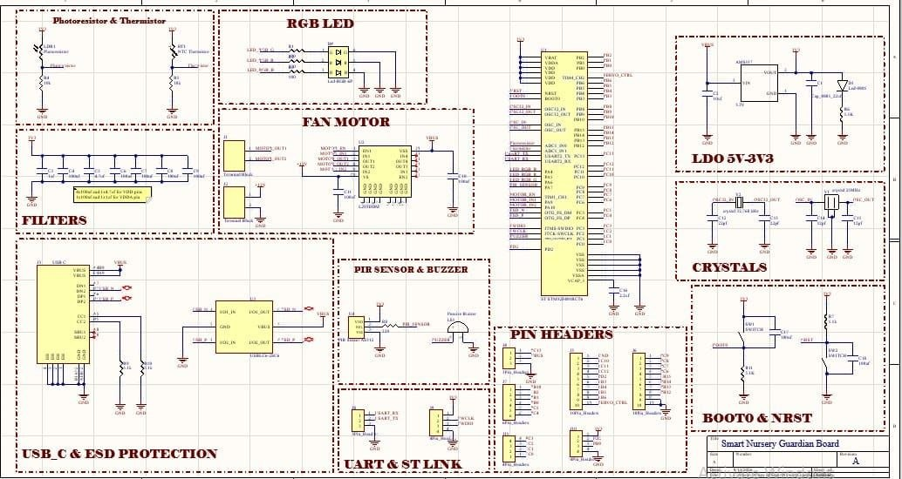
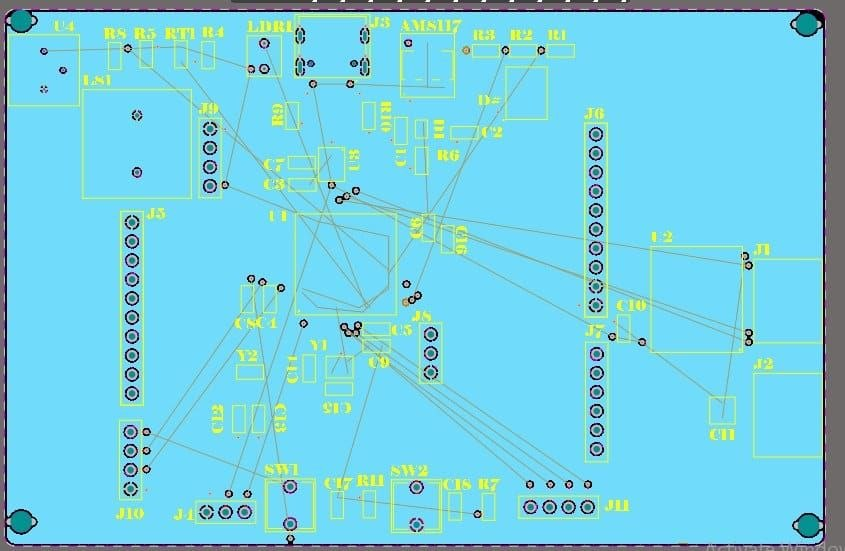
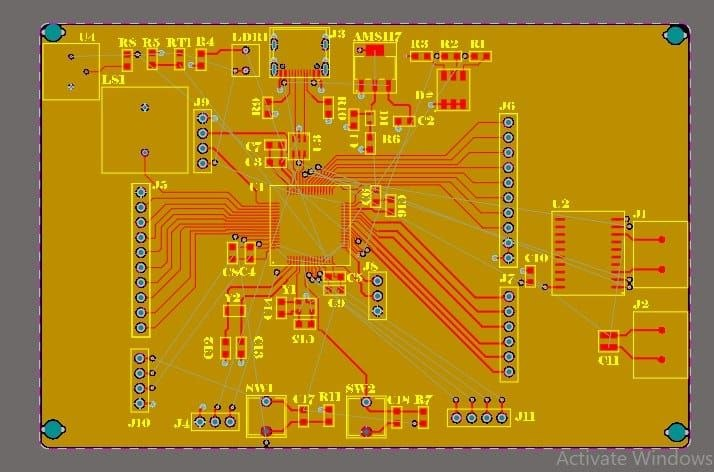
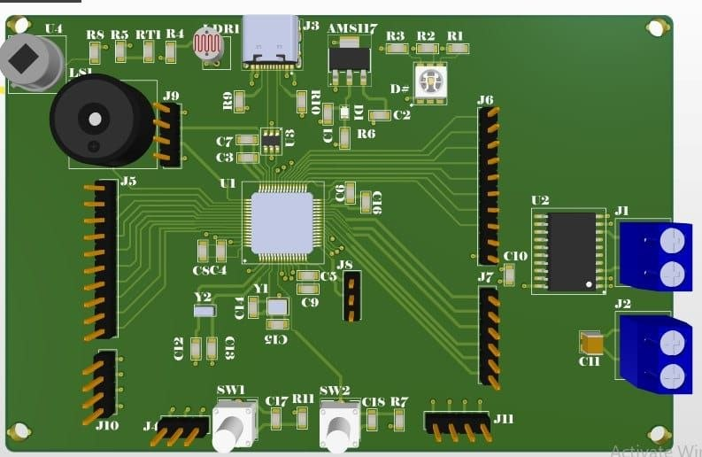

Smart Nursery Guardian — an AI-assisted embedded monitoring system for intelligent infant care.
PROJECT COMPLETEDSmart Nursery Guardian is an integrated AI and Embedded Systems project designed to monitor an infant and the surrounding nursery environment.
The system combines machine learning-based baby cry classification, STM32-based sensing and control, environmental monitoring, a Python GUI, serial communication, and remote safety alerts.
Audio samples are processed before extracting features including MFCC statistics, duration, RMS intensity, fundamental frequency, and zero-crossing rate.
The training pipeline includes dataset validation, audio augmentation, model comparison, cross-validation, confusion matrix evaluation, and ROC-AUC analysis.
A custom PCB was developed in Altium Designer to integrate the microcontroller, sensors, communication interfaces, power circuitry, and actuator control electronics.

Complete system schematic including STM32, sensors, power, motor control, USB-C, UART and ST-Link.



| Category | Technologies |
|---|---|
| Machine Learning | Python, Scikit-learn, Random Forest, SVM, GridSearchCV |
| Audio Processing | Librosa, MFCC, VAD, Noise Reduction |
| Embedded Systems | STM32, UART, ADC, PWM |
| Software | Python, Tkinter, Serial Communication |
| PCB Design | Altium Designer, Schematic Design, PCB Layout & 3D Visualization |